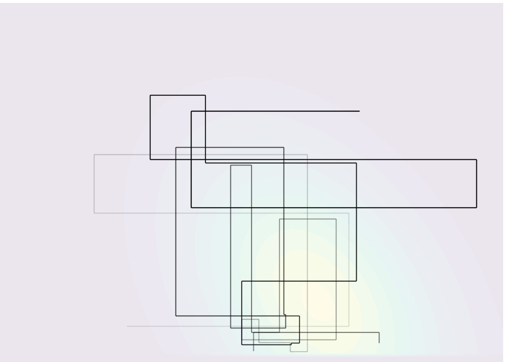
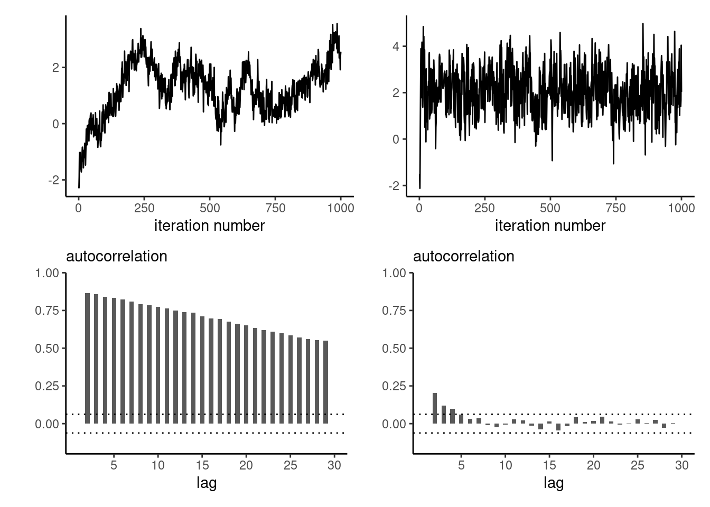
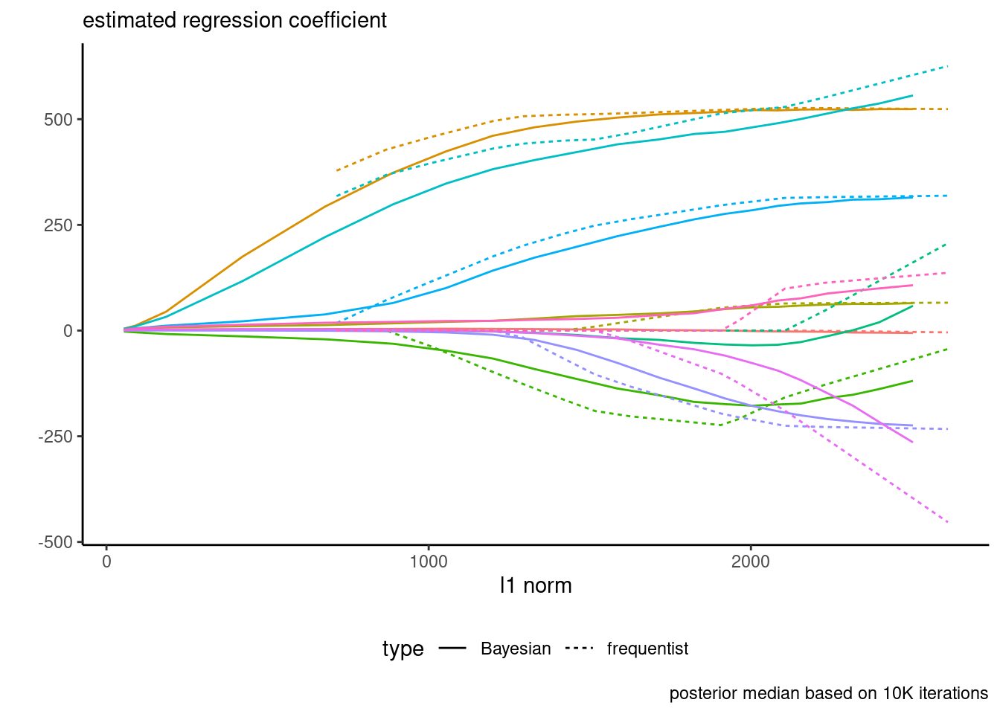
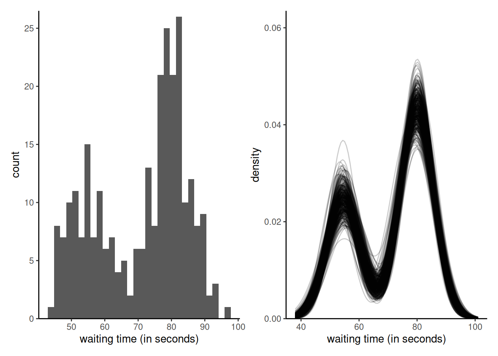

6 Gibbs sampling
Learning objectives:
At the end of the chapter, students should be able to
- implement Gibbs sampling.
- derive the conditional distributions of a model for Gibbs sampling.
- use data augmentation to emulate Gibbs sampling.
The Gibbs sampling algorithm builds a Markov chain by iterating through a sequence of conditional distributions. Consider a model with \(\boldsymbol{\theta} \in \boldsymbol{\Theta} \subseteq \mathbb{R}^p.\) We consider a single (or \(m \leq p\) blocks of parameters), say \(\boldsymbol{\theta}^{[j]},\) such that, conditional on the remaining components of the parameter vector \(\boldsymbol{\theta}^{-[j]},\) the conditional posterior \(p(\boldsymbol{\theta}^{[j]} \mid \boldsymbol{\theta}^{-[j]}, \boldsymbol{y})\) is from a known distribution from which we can simulate draws
At iteration \(t,\) we can update each block in turn: note that the \(k\)th block uses the partially updated state \[\begin{align*} \boldsymbol{\theta}^{-[k]\star} = (\boldsymbol{\theta}_{t}^{[1]}, \ldots, \boldsymbol{\theta}_{t}^{[k-1]},\boldsymbol{\theta}_{t-1}^{[k+1]}, \boldsymbol{\theta}_{t-1}^{[m]}) \end{align*}\] which corresponds to the current value of the parameter vector after the updates. To check the validity of the Gibbs sampler, see the methods proposed in Geweke (2004).
The Gibbs sampling can be viewed as a special case of Metropolis–Hastings where the proposal distribution \(q\) is \(p(\boldsymbol{\theta}^{[j]} \mid \boldsymbol{\theta}^{-[j]\star}, \boldsymbol{y}).\) The particularity is that all proposals get accepted because the log posterior of the partial update, equals the proposal distribution, so \[\begin{align*} R &= \frac{p(\boldsymbol{\theta}_t^{\star} \mid \boldsymbol{y})}{p(\boldsymbol{\theta}_{t-1}\mid \boldsymbol{y})}\frac{p(\boldsymbol{\theta}_{t-1}^{[j]} \mid \boldsymbol{\theta}^{-[j]\star}, \boldsymbol{y})}{p(\boldsymbol{\theta}_t^{[j]\star} \mid \boldsymbol{\theta}^{-[j]\star}, \boldsymbol{y})} \\ &= \frac{p(\boldsymbol{\theta}_t^{[j]\star} \mid \boldsymbol{\theta}^{-[j]\star}, \boldsymbol{y})p(\boldsymbol{\theta}^{-[j]\star} \mid \boldsymbol{y})}{p(\boldsymbol{\theta}_{t-1}^{[j]} \mid \boldsymbol{\theta}^{-[j]\star}, \boldsymbol{y})p(\mid \boldsymbol{\theta}^{-[j]\star} \mid \boldsymbol{y})}\frac{p(\boldsymbol{\theta}_{t-1}^{[j]} \mid \boldsymbol{\theta}^{-[j]\star}, \boldsymbol{y})}{p(\boldsymbol{\theta}_t^{[j]\star} \mid \boldsymbol{\theta}^{-[j]\star}, \boldsymbol{y})} =1. \end{align*}\] Regardless of the order (systematic scan or random scan), the procedure remains valid. The Gibbs sampling is thus an automatic algorithm: we only need to derive the conditional posterior distributions of the parameters and run the sampler, and there are no tuning parameter involved. If the parameters are strongly correlated, the changes for each parameter will be incremental and this will lead to slow mixing and large autocorrelation, even if the values drawn are all different. Figure 6.1 shows 25 steps from a Gibbs algorithm for a bivariate target.
As a toy illustration, we use Gibbs sampling to simulate data from a \(d\)-dimensional multivariate Gaussian target with mean \(\boldsymbol{\mu}\) and equicorrelation covariance matrix \(\mathbf{\Sigma} = (1-\rho)\mathbf{I}_d + \rho\boldsymbol{1}_{d}\boldsymbol{1}^\top_d\) with inverse \[\mathbf{Q} = \boldsymbol{\Sigma}^{-1}=(1-\rho)^{-1}\left\{\mathbf{I}_d - \rho \mathbf{1}_d\mathbf{1}_d/(1+(d-1)\rho)\right\},\] for known correlation coefficient \(\rho.\) While we can easily sample independent observations, the exercise is insightful to see how well the methods works as the dimension increases, and when the correlation between pairs becomes stronger.
Consider \(\boldsymbol{Y} \sim \mathsf{Gauss}_d(\boldsymbol{\mu}, \boldsymbol{\Sigma})\) and a partition \((\boldsymbol{Y}_1^\top, \boldsymbol{Y}_2^\top)^\top\): the conditional distribution of the \(k\) subvector \(\boldsymbol{Y}_1\) given the \(d-k\) other components \(\boldsymbol{Y}_2\) is, in terms of either the covariance (first line) or the precision (second line), Gaussian where \[\begin{align*} \boldsymbol{Y}_1 \mid \boldsymbol{Y}_2=\boldsymbol{y}_2 &\sim \mathsf{Gauss}_{k}\left\{ \boldsymbol{\mu}_1 + \boldsymbol{\Sigma}_{12} \boldsymbol{\Sigma}_{22}^{-1}(\boldsymbol{y}_2 - \boldsymbol{\mu}_2), \boldsymbol{\Sigma}_{11} - \boldsymbol{\Sigma}_{12}\boldsymbol{\Sigma}_{22}^{-1}\boldsymbol{\Sigma}_{21}\right\} \\&\sim \mathsf{Gauss}_{k}\left\{ \boldsymbol{\mu}_1 -\mathbf{Q}_{11}^{-1}\mathbf{Q}_{12}(\boldsymbol{y}_2 - \boldsymbol{\mu}_2), \mathbf{Q}_{11}^{-1}\right\}. \end{align*}\]
# Create a 20 dimensional equicorrelation
d <- 20
Q <- hecbayes::equicorrelation(d = d, rho = 0.9, precision = TRUE)
B <- 1e4
chains <- matrix(0, nrow = B, ncol = d)
mu <- rep(2, d)
# Start far from mode
curr <- rep(-3, d)
for(i in seq_len(B)){
# Random scan, updating one variable at a time
for(j in sample(1:d, size = d)){
# sample from conditional Gaussian given curr
curr[j] <- hecbayes::rcondmvnorm(
n = 1,
value = curr,
ind = j,
mean = mu,
precision = Q)
}
chains[i,] <- curr # save values after full round of update
}As the dimension of the parameter space increases, and as the correlation between components becomes larger, the efficiency of the Gibbs sampler degrades: Figure 6.2 shows the first component for updating one-parameter at a time for a multivariate Gaussian target in dimensions \(d=20\) and \(d=3,\) started at four deviation away from the mode. The chain makes smaller steps when there is strong correlation, resulting in an inefficient sampler.

The main bottleneck in Gibbs sampling is determining all of the relevant conditional distributions, which often relies on setting conditionally conjugate priors. In large models with multiple layers, full conditionals may only depend on a handful of parameters.
Example 6.1 Consider a Gaussian model \(Y_i \sim \mathsf{Gauss}(\mu, \tau)\) (\(i=1, \ldots, n\)) are independent, and where we assign priors \(\mu \sim \mathsf{Gauss}(\nu, \omega)\) and \(\tau \sim \mathsf{inv. gamma}(\alpha, \beta).\)
The joint posterior is not available in closed form, but the independent priors for the mean and variance of the observations are conditionally conjugate, since the joint posterior \[\begin{align*} p(\mu, \tau \mid \boldsymbol{y}) \propto& \tau^{-n/2}\exp\left\{-\frac{1}{2\tau}\left(\sum_{i=1}^n y_i^2 - 2\mu \sum_{i=1}^n y_i+n\mu^2 \right)\right\}\\& \times \exp\left\{-\frac{(\mu-\nu)^2}{2\omega}\right\} \times \tau^{-\alpha-1}\exp(-\beta/\tau) \end{align*}\] gives us \[\begin{align*} p(\mu \mid \tau, \boldsymbol{y}) &\propto \exp\left\{-\frac{1}{2} \left( \frac{\mu^2-2\mu\overline{y}}{\tau/n} + \frac{\mu^2-2\nu \mu}{\omega}\right)\right\}\\ p(\tau \mid \mu, \boldsymbol{y}) & \propto \tau^{-n/2-\alpha-1}\exp\left[-\frac{1}{\tau}\left\{\frac{\sum_{i=1}^n (y_i-\mu)^2}{2} + \beta \right\}\right] \end{align*}\] so we can simulate in turn \[\begin{align*} \mu_t \mid \tau_{t-1}, \boldsymbol{y} &\sim \mathsf{Gauss}\left(\frac{n\overline{y}\omega+\tau \nu}{\tau + n\omega}, \frac{\omega \tau}{\tau + n\omega}\right)\\ \tau_t \mid \mu_t, \boldsymbol{y} &\sim \mathsf{inv. gamma}\left\{\frac{n}{2}+\alpha, \frac{\sum_{i=1}^n (y_i-\mu)^2}{2} + \beta\right\}. \end{align*}\]
Remark (Gibbs sampler and proper posterior). Gibbs sampling cannot be used to determine if the posterior is improper. If the posterior is not well defined, the Markov chains may seem to stabilize even though there is no proper target.
6.1 Data augmentation and auxiliary variables
In many problems, the likelihood \(p(\boldsymbol{y}; \boldsymbol{\theta})\) is intractable or costly to evaluate and auxiliary variables are introduced to simplify calculations, as in the expectation-maximization algorithm. The Bayesian analog is data augmentation (Tanner and Wong 1987), which we present succinctly: let \(\boldsymbol{\theta} \in \Theta\) be a vector of parameters and consider auxiliary variables \(\boldsymbol{u} \in \mathbb{R}^k\) such that \(\int_{\mathbb{R}^k} p(\boldsymbol{u}, \boldsymbol{\theta}; \boldsymbol{y}) \mathrm{d} \boldsymbol{u} = p(\boldsymbol{\theta}; \boldsymbol{y}),\) i.e., the marginal distribution is that of interest, but evaluation of \(p(\boldsymbol{u}, \boldsymbol{\theta}; \boldsymbol{y})\) is cheaper. The data augmentation algorithm consists in running a Markov chain on the augmented state space \((\Theta, \mathbb{R}^k),\) simulating in turn from the conditionals \(p(\boldsymbol{u}; \boldsymbol{\theta}, \boldsymbol{y})\) and \(p(\boldsymbol{\theta}; \boldsymbol{u}, \boldsymbol{y})\) with new variables chosen to simplify the likelihood. If simulation from the conditionals is straightforward, we can also use data augmentation to speed up calculations or improve mixing. For more details and examples, see Dyk and Meng (2001) and Hobert (2011).
Example 6.2 (Probit regression) Consider binary responses \(\boldsymbol{Y}_i,\) for which we postulate a probit regression model, \[\begin{align*} p_i = \Pr(Y_i=1) = \Phi(\beta_0 + \beta_1 \mathrm{X}_{i1} + \cdots + \beta_p\mathrm{X}_{ip}), \end{align*}\] where \(\Phi\) is the distribution function of the standard Gaussian distribution. The likelihood of the probit model for a sample of \(n\) independent observations is \[L(\boldsymbol{\beta}; \boldsymbol{y}) = \prod_{i=1}^n p_i^{y_i}(1-p_i)^{1-y_i},\] and this prevents easy simulation. We can consider a data augmentation scheme where \(Y_i = \mathrm{I}(Z_i > 0),\) where \(Z_i \sim \mathsf{Gauss}(\mathbf{x}_i\boldsymbol{\beta}, 1),\) with \(\mathbf{x}_i\) denoting the \(i\)th row of the design matrix.
The augmented data likelihood is \[\begin{align*} p(\boldsymbol{z}, \boldsymbol{y} \mid \boldsymbol{\beta}) \propto \exp\left\{-\frac{1}{2}(\boldsymbol{z} - \mathbf{X}\boldsymbol{\beta})^\top(\boldsymbol{z} - \mathbf{X}\boldsymbol{\beta})\right\} \times \prod_{i=1}^n \mathrm{I}(z_i > 0)^{y_i}\mathrm{I}(z_i \le 0)^{1-y_i} \end{align*}\] Given \(Z_i,\) the coefficients \(\boldsymbol{\beta}\) are simply the results of ordinary linear regression with unit variance, so \[\begin{align*} \boldsymbol{\beta} \mid \boldsymbol{z}, \boldsymbol{y} &\sim \mathsf{Gauss}\left\{\widehat{\boldsymbol{\beta}}, (\mathbf{X}^\top\mathbf{X})^{-1}\right\} \end{align*}\] with \(\widehat{\boldsymbol{\beta}}=(\mathbf{X}^\top\mathbf{X})^{-1}\mathbf{X}^\top\boldsymbol{z}\) is the ordinary least square estimator from the regression with model matrix \(\mathbf{X}\) and response vector \(\boldsymbol{z}.\) The augmented variables \(Z_i\) are conditionally independent and truncated Gaussian with \[\begin{align*} Z_i \mid y_i, \boldsymbol{\beta} \sim \begin{cases} \mathsf{trunc. Gauss}(\mathbf{x}_i\boldsymbol{\beta},1, -\infty, 0) & y_i =0 \\ \mathsf{trunc. Gauss}(\mathbf{x}_i\boldsymbol{\beta},1, 0, \infty) & y_i =1. \end{cases} \end{align*}\] and we can use the algorithms of Example 4.2 to simulate these.
probit_regression <- function(y, x, B = 1e4L, burnin = 100){
y <- as.numeric(y)
n <- length(y)
# Add intercept
x <- cbind(1, as.matrix(x))
xtxinv <- solve(crossprod(x))
# Use MLE as initial values
beta.curr <- coef(glm(y ~ x - 1, family=binomial(link = "probit")))
# Containers
Z <- rep(0, n)
chains <- matrix(0, nrow = B, ncol = length(beta.curr))
for(b in seq_len(B + burnin)){
ind <- max(1, b - burnin)
Z <- TruncatedNormal::rtnorm(
n = 1,
mu = as.numeric(x %*% beta.curr),
lb = ifelse(y == 0, -Inf, 0),
ub = ifelse(y == 1, Inf, 0),
sd = 1)
beta.curr <- chains[ind,] <- as.numeric(
mvtnorm::rmvnorm(
n = 1,
mean = coef(lm(Z ~ x - 1)),
sigma = xtxinv))
}
return(chains)
}Example 6.3 (Bayesian LASSO) The Laplace distribution with location \(\mu\) and scale \(\sigma,\) has density \[\begin{align*} f(x; \mu, \sigma) = \frac{1}{2\sigma}\exp\left(-\frac{|x-\mu|}{\sigma}\right). \end{align*}\] It can be expressed as a scale mixture of Gaussians, where \(Y_i \sim \mathsf{Laplace}(\mu, \sigma)\) is equivalent to \(Z_i \mid \tau \sim \mathsf{Gauss}(\mu, \lambda_i)\) and \(\Lambda_i \sim \mathsf{expo}\{(2\sigma^2)^{-1}\}.\) To see this, we first look at the Wald (or inverse Gaussian) distribution \(\mathsf{Wald}(\nu, \omega)\) with location \(\nu >0\) and shape \(\omega>0,\), whose density is \[\begin{align*} f(y; \nu, \omega) &= \left(\frac{\omega}{2\pi y^{3}}\right)^{1/2} \exp\left\{ - \frac{\omega (y-\nu)^2}{2\nu^2y}\right\}, \quad y > 0 \\ &\stackrel{y}{\propto} y^{-3/2}\exp\left\{-\frac{\omega}{2} \left(\frac{y}{\nu^2} + \frac{1}{y}\right)\right\} \end{align*}\] To show that the marginal (unconditionally) is Laplace, we write the joint density and integrate out the variance term \(\lambda,\) make the change of variable to get the result in terms of the precision \(\xi = 1/\lambda\), whence \[\begin{align*} p(z) &= \int_{0}^{\infty} p(z \mid \lambda) p(\lambda) \mathrm{d} \lambda \\&= \int_0^{\infty} \frac{1}{(2\pi\lambda)^{1/2}}\exp \left\{-\frac{1}{2\lambda}(z-\mu)^2\right\}\frac{1}{2\sigma^2}\exp\left(-\frac{\lambda}{2\sigma^2}\right) \mathrm{d} \lambda \\&= \frac{1}{2\sigma^2}\int_0^{\infty} \frac{1}{(2\pi\lambda)^{1/2}}\exp \left[-\frac{1}{2} \left\{\frac{(z-\mu)^2}{\lambda}+\frac{\lambda}{\sigma^2}\right\}\right] \mathrm{d} \lambda \\&= \frac{1}{2\sigma^2}\int_0^{\infty} \frac{1}{\xi^2}\frac{\xi^{1/2}}{(2\pi)^{1/2}}\exp \left[-\frac{1}{2\sigma^2} \left\{\xi\sigma^2(z-\mu)^2+\frac{1}{\xi}\right\}\right] \mathrm{d} \xi \\&= \frac{1}{2\sigma^2}\int_0^{\infty} \frac{1}{(2\pi\xi^3)^{1/2}}\exp \left[-\frac{\omega}{2} \left\{\frac{\xi}{\nu^2}+\frac{1}{\xi}\right\}\right] \mathrm{d} \xi \\&= \frac{1}{2\sigma^2\omega^{1/2}}\exp\left(-\frac{\omega}{\nu}\right) \\& = \frac{1}{2\sigma}\exp\left(-\frac{|z-\mu|}{\sigma}\right). \end{align*}\] upon recovering the conditional density of \(\Xi \mid Z \sim \mathsf{Wald}(\nu, \omega)\) with parameters \(\nu=(\sigma|z-\mu|)^{-1}\) and \(\omega=\sigma^{-2}\).
Park and Casella (2008) use this hierarchical construction to define the Bayesian LASSO. With a model matrix \(\mathbf{X}\) whose columns are standardized to have mean zero and unit standard deviation, we may write \[\begin{align*} \boldsymbol{Y} \mid \mu, \boldsymbol{\beta}, \sigma^2 &\sim \mathsf{Gauss}_n(\mu \boldsymbol{1}_n + \mathbf{X}\boldsymbol{\beta}, \sigma^2 \mathbf{I}_n)\\ \beta_j \mid \sigma^2, \tau_j &\sim \mathsf{Gauss}(0, \sigma^2\tau_j)\\ \tau_j &\sim \mathsf{expo}(\lambda/2) \end{align*}\] With the improper prior \(p(\mu, \sigma^2) \propto 1/\sigma^2\) and with \(n\) independent and identically distributed Laplace variates, written as a scale mixture, the model is amenable to Gibbs sampling. With \(\mathbf{D}^{-1}_{\tau} = \mathrm{diag}(\tau_1^{-1}, \ldots, \tau_p^{-1})\) and \(\tilde{\boldsymbol{y}} = \boldsymbol{y} - \overline{y}\mathbf{1}_n\) the centered response vector, we can simulate in turn (Park and Casella 2008) \[\begin{align*} \mu \mid \sigma^2, \boldsymbol{y} &\sim \mathsf{Gauss}(\overline{y}, \sigma^2/n) \\ \boldsymbol{\beta} \mid \sigma^2, \boldsymbol{\tau}, \boldsymbol{y} &\sim \mathsf{Gauss}_p\left\{\left(\mathbf{X}^\top\mathbf{X} + \mathbf{D}^{-1}_{\tau}\right)^{-1} \mathbf{X}\widetilde{\boldsymbol{y}}, \sigma^2\left(\mathbf{X}^\top\mathbf{X} + \mathbf{D}^{-1}_{\tau}\right)^{-1}\right\}\\ \sigma^2 \mid \boldsymbol{\beta}, \boldsymbol{\tau},\boldsymbol{y} &\sim \mathsf{inv. gamma}\left\{ \frac{n-1+p}{2}, \frac{(\widetilde{\boldsymbol{y}}-\mathbf{X}\boldsymbol{\beta})^\top(\widetilde{\boldsymbol{y}}-\mathbf{X}\boldsymbol{\beta}) + \boldsymbol{\beta}^\top\mathbf{D}^{-1}_{\tau} \boldsymbol{\beta}}{2}\right\},\\ \tau_j^{-1} \mid \boldsymbol{\beta}, \sigma^2 &\sim \mathsf{Wald} \left( \frac{\lambda^{1/2}\sigma}{|\beta_j|}, \lambda\right) \end{align*}\] where the last three conditional distributions follow from marginalizing out \(\mu.\)
The Bayesian LASSO places a Laplace penalty on the regression coefficients, with lower values of \(\lambda\) yielding more shrinkage. Figure 6.3 shows a replication of Figure 1 of Park and Casella (2008), fitted to the diabetes data. Note that, contrary to the frequentist setting, none of the posterior draws of \(\boldsymbol{\beta}\) are exactly zero.

Many elliptical distributions can be cast as scale mixture models of spherical or Gaussian variables; see, e.g., Section 10.2 of Albert (2009) for a similar derivation with a Student-\(t\) distribution.
Example 6.4 (Mixture models) In clustering problems, we can specify that observations arise from a mixture model with a fixed or unknown number of coefficients: the interest lies then in estimating the relative weights of the components, and their location and scale.
A \(K\)-mixture model is a weighted combination of models frequently used in clustering or to model subpopulations with respective densities \(f_k,\) with density \[f(x; \boldsymbol{\theta}, \boldsymbol{\omega}) = \sum_{k=1}^K \omega_kf_k(x; \boldsymbol{\theta}_k), \qquad \omega_1 + \cdots \omega_K=1.\] Since the density involves a sum, numerical optimization is challenging. Let \(C_i\) denote the cluster index for observation \(i\): if we knew the value of \(C_i =j,\) the density would involve only \(f_j.\) We can thus use latent variables representing the group allocation to simplify the problem and run an EM algorithm or use the data augmentation. In an iterative framework, we can consider the complete data as the tuples \((X_i, Z_i),\) where \(Z_i = \mathrm{I}(C_i=k).\)
With the augmented data, the likelihood becomes \[\begin{align*} \prod_{i=1}^n \prod_{k=1}^K \{\omega_kf_k(x; \boldsymbol{\theta}_k)\}^{Z_i}, \end{align*}\] so the conditional distribution of \(Z_i \mid X_i, \boldsymbol{\omega}, \boldsymbol{\theta} \sim \mathsf{multinom}(1, \boldsymbol{\gamma}_{ik})\) where \[\gamma_{ik} = \frac{\omega_k f_k(X_i\boldsymbol{\theta}_k)}{\sum_{j=1}^K \omega_jf_j(X_i\boldsymbol{\theta}_k)}.\] Given suitable priors for the probabilities \(\boldsymbol{\omega}\) and \(\boldsymbol{\theta} \equiv \{\boldsymbol{\theta}_1, \ldots, \boldsymbol{\theta}_k\},\) we can use Gibbs sampling updating \(\boldsymbol{Z},\) \(\boldsymbol{\omega}\) and \(\boldsymbol{\theta}\) in turn, assigning a conjugate Dirichlet prior for \(\boldsymbol{\omega}.\)
Example 6.5 (Mixture model for geyser) We consider a Gaussian mixture model for waiting time between two eruptions of the Old Faithful geyser in Yellowstone. The distribution is of the form \[\begin{align*} f_i(x) = p_i \phi_{1}(x_i; \mu_1, \tau_1^{-1}) + (1-p_i)\phi_{2}(x_i; \mu_2, \tau_2^{-1}). \end{align*}\] where \(\phi(\cdot; \mu, \tau^{-1})\) is the density function of a Gaussian with mean \(\mu\) and precision \(\tau.\) We assign conjugate priors with \(p_i \sim \mathsf{beta}(a_1, a_2),\) \(\mu_j \sim \mathsf{Gauss}(c, d^{-1})\) and \(\tau_j \sim \mathsf{gamma}(b_1, b_2).\) For the hyperpriors, we use \(a_1=a_2=1,\) \(b_1=1, b_2 = 0.1,\) \(c = 60,\) and \(d = 1/40.\)
data(faithful)
n <- nrow(faithful)
y <- faithful$waiting
# Fix hyperpriors
a1 <- 2; a2 <- 2; c <- 60; d <- 1/40; b1 <- 1; b2 <- 0.01
# Assign observations at random to groups
set.seed(80601)
cut <- runif(1, 0.1, 0.9)*diff(range(y)) + min(y)
group <- as.integer(y > cut)
p <- sum(group == 0L)/n
mu <- c(mean(y[group == 0]), mean(y[group == 1]))
prec <- 1/c(var(y[group == 0]), var(y[group == 1]))
# Storage and number of replications
B <- 1e4L
theta <- matrix(nrow = B, ncol = 5L)
# Step 1: assign variables to clusters
for(b in 1:B){
d1 <- dnorm(y, mean = mu[1], sd = 1/sqrt(prec[1])) # group 0
d2 <- dnorm(y, mean = mu[2], sd = 1/sqrt(prec[2])) # group 1
# Data augmentation: group labels
group <- rbinom(n = n, size = rep(1, n), prob = (1-p)*d2/(p*d1 + (1-p)*d2))
# Step 2: update probability of cluster
p <- rbeta(n = 1, shape1 = n - sum(group) + a1, sum(group) + a2)
for(j in 1:2){
yg <- y[group == (j-1L)]
ng <- length(yg)
prec_mu <- prec[j] * ng + d
mean_mu <- (sum(yg)*prec[j] + c*d)/prec_mu
mu[j] <- rnorm(n = 1, mean = mean_mu, sd = 1/sqrt(prec_mu))
prec[j] <- rgamma(n = 1,
shape = b1 + ng/2,
rate = b2 + 0.5*sum((yg-mu[j])^2))
}
theta[b, ] <- c(p, mu, prec)
}
# Discard initial observations (burn in)
theta <- theta[-(1:100),]

Remark 6.1 (Label switching in mixture models). If we run a MCMC algorithm to sample from a mixture models, the likelihood is invariant to permutation of the group labels, leading to identifiability issues when the chain swaps modes, when running multiple Markov chains with symmetric priors or using tempering algorithms. Two chains may thus reach the same stationary distribution, with group labels swapped. It is sometimes necessary to impose ordering constraints on the mean parameters \(\boldsymbol{\mu},\) although this isn’t necessarily easy to generalize beyond the univariate setting. See Jasra, Holmes, and Stephens (2005) and Stephens (2002) for more details.
Summary:
- Gibbs sampling is a special case of Metropolis–Hastings algorithm, where we sample from the conditional distributions given other parameters.
- Use of (conditionally) conjugate priors enables Gibbs sampling.
- The fact that any Gibbs step is accepted with probability one does not mean the sampler is efficient: there can be significant autocorrelation in the chains.
- We can sometimes update parameters jointly, or reduce the dependence by integrating out some of the conditioning variables (marginalization).
- We can use Gibbs step for some updates within a more general algorithm.
- Even if there is no closed-form expression, we can use Monte Carlo methods to simulate parameters in a Gibbs sampler.
- In many scenarios, the likelihood is costly to evaluate or not amenable to Gibbs sampling. Data augmentation introduces additional parameters to the model in exchange for simplifying the likelihood.
- Data augmentation leads to a trade-off between complexity and efficiency (more parameters, slower mixing).
- Data augmentation is commonly used for expectation-maximisation (EM) algorithm for maximum likelihood estimation in frequentist setting.
- Special classes of models (Bayesian linear regression, mixtures, etc.) are typically fitted using Gibbs sampling.
- Probabilistic programming languages (Bugs, JAGS) rely on Gibbs sampling.